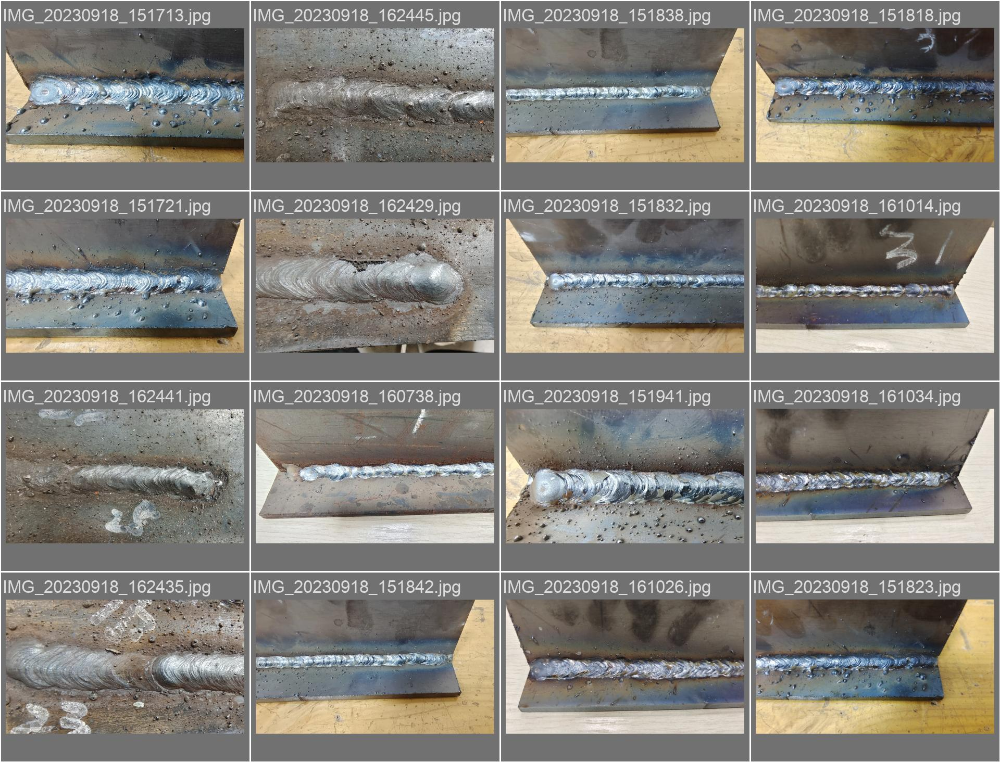
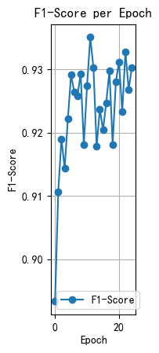
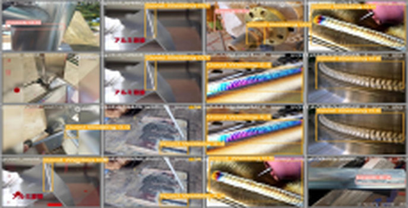

Weld Image Recognition
Industrial weld defect detection system based on YOLOv5, with 86% recognition accuracy on self-built weld image dataset.

Dataset & Training
The data was shot and labelled in-house: welded test pieces under workshop lighting, one label file per frame. What follows is the material that fed the model and the curve it produced.


What the curve says
F1 clears 0.91 within two epochs and then oscillates instead of climbing — the signature of a model that has already learned most of what the labels can teach it. A small, hand-built set leaves little room for a long schedule.
The dips line up with batches holding the faint-seam frames that survived filtering. On a set this size the residual error is dominated by label ambiguity rather than by model capacity, so the curve flattens at ≈0.93 instead of approaching 1.0.
At a glance
How the labels were made
- Inclusion — the bead texture is continuous and the seam boundary stays visible across the whole frame.
- Exclusion — the seam is too faint to call confidently by eye. Dropped rather than guessed: a wrong box teaches the model the wrong edge.
- Annotation — boxes drawn per defect instance on the raw frame and exported in YOLO format, so training needs no conversion step.
Building the set by hand rather than scraping one means the class balance reflects the workshop instead of the internet — fewer frames, but every one of them is a real inspection case.
Qualitative Results
Sixteen frames from the captured set with the trained detector run over them — the seams look nothing alike, and the box finds the seam in every one of them.

What the boxes show
The tiles deliberately disagree with each other: a bright arc-lit seam here, a dull grey joint there, plate oiled in one frame and ground clean in the next. The box follows the seam line rather than the brightest ridge in the frame — which is the point, because a threshold on grey level is exactly what it replaced.
The frames worth studying are the ones where the seam runs out of view or disappears under spatter: the box stretches to cover what is left. Those are the cases to open when the model is wrong, since the mistake shows up in the picture long before it shows up in any metric.
At a glance
Project Overview
This project applies YOLOv5 target detection algorithm to industrial weld defect recognition, realizing automatic detection of weld cracks, pores and other defects.
I independently completed dataset production, model training, optimization and deployment, providing an intelligent detection solution for industrial welding quality control.
Technical Stack
Project Process
Dataset Building
Collected and annotated 5000+ industrial weld defect images.
Model Training
Trained YOLOv5 model for multi-class weld defect detection.
Model Optimization
Adjusted model parameters to improve detection accuracy and speed.
System Deployment
Deployed the detection system for industrial field application.
Project Outcomes
Detection Accuracy
86% mAP on self-built industrial weld defect dataset.
Industrial Value
Realized automatic weld quality inspection for manufacturing.
Efficiency Improvement
Reduced manual detection time by 60% for welding production lines.
Related Projects

Thyroid Carcinoma Classification
View Project
Math Modeling Competitions
View Project